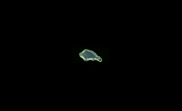
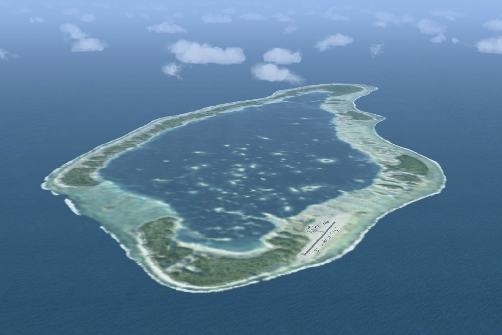

French Polynesia Tuamotu Archipelago FS9/FSX Addon Scenery
Group C
Napuka

Napuka is a small atoll located in the far north east of the archipelago. It lies south east of its neighbour Tepoto Nord. The atoll is one of the trio of atolls that form the northeastern grouping known as the Disappointment islands. This dishonorable name was given by Ferdinand Magellan. They were not able to discover water though they called at these islands while navigating to the Philippine Islands. PukaPuka located far east is not included in this scenery. This atoll is 7 km in length and 3.5 km wide. There is no pass through the coral reef, but there is an airfield on the islet of Ogoio.
Dr. Angela Kay Kepler answered my description mistake about "the Disappointement islands":
The Disappointment Islands were not discovered by Magellan in 1521 (that was Puka Puka to the east) but discovered by Byron in 1765.
Dr. Kepler, Thanks very much for your precise comment.
The description in itself about my Napuka was having a ambiguity. Therefore I rewrote explanation about Napuka as follows:
Napuka is a small atoll located in the far north east of the archipelago. It lies south east of its neighbour Tepoto Nord. This atoll is 11 km in length and 5 km in width and there is an airfield on the Ogoio( motu i.e. islet ).
Napuka and TepotNord are the two of three atolls that form the northeastern grouping of Tuamotu Archipelago known as the Disappointement islands. This dishonorable name was given by John Byron, in 1765. This is because he thought that islanders are antagonistic to him.
Another atoll is PukaPuka located in the far east( about 270km ). This atoll was discoverd by Ferdinand Magellan in 1521. They were not able to discover water though they called at this island while navigating to the Philippine Islands. So he called this island "Unfortunate Island".
I don't know well why PukaPuka is included in a member of Disappointment islands. It is my imagination as follows: I think "Unfortunate Island" resembles "Disappointment Island" in a meaning. Therefore the generic name of three islands became Disappointment.
PukaPuka is not included in this scenery.

Size of Napuka based on Rangiroa

A view of the northeast
